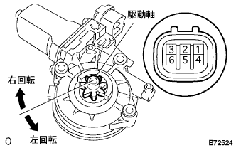

パワーウインドウレギュレータ モータASSY LH 単体点検 |
| 1. パワーウインドウレギュレータ モータASSY LH点検 |
パワーウインドウレギュレータモータASSY LH作動点検
|  |
コネクタ各端子にバッテリ電圧を加えたとき、モータがスムースに作動することを点検する。
| 測定条件 | 作動方向 |
|---|---|
| バッテリプラス←→3端子 バッテリマイナス←→1端子 | 駆動軸に対して右回転 |
| バッテリプラス←→1端子 バッテリマイナス←→3端子 | 駆動軸に対して左回転 |
PTC(パワーウインドウモータ保護機能)作動点検
SST(トヨタエレクトリカルテスターのDC400Aプローブ)を助手席パワーウインドウレギュレータモータのコネクタの1端子のワイヤハーネスにセットする。
助手席ドアガラスを全閉にする。
全閉約60秒後、再度(初回時)助手席パワーウインドウスイッチをUP側に操作し続けたとき、モータの電流が約16-34Aから1A以下に変化するまでの時間を点検する。(遮断点検)
点検後約60秒後に助手席パワーウインドウスイッチを操作して、ドアガラスが下降することを確認する。(復帰点検)